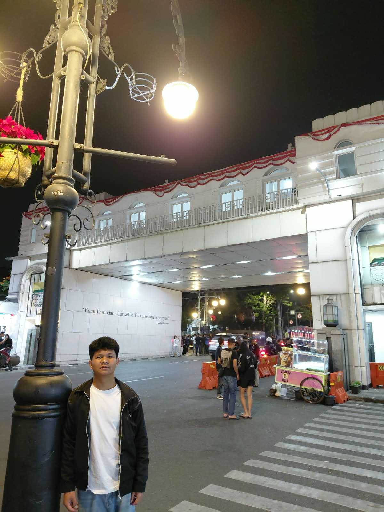

Biodata

Informasi Pribadi
- Nama lengkap
- Roynaldy Chandra Siregar
- NIM
- 2582026
- Program studi
- Sistem Informasi
Biografi
Saya Roynaldy, kerap di panggil Roy mahasiswa Sistem Informasi di Unai, saya sedang belajar pemrograman dan juga cara membuat website. Saya sangat tertarik dengan teknologi dan internet.
Target saya ke depan adalah lulus di Universitas Advent Indonesia, lalu segera mendapatkan kerja dan mencari uang.
Hobi dan Minat
Hobi utama
- Bermain game
- Bermain voli
- Berjalan jalan pakai Motor
Minat lainnya
- Main Sepeda
- Bermain Gitar
- Bernyanyi
Informasi Akademik
| No | Semester | Tahun Akademik | IPK |
|---|---|---|---|
| 1 | Ganjil | 2025/2026 | 2.88 |
| 2 | Genap | 2025/2026 | 3.19 |